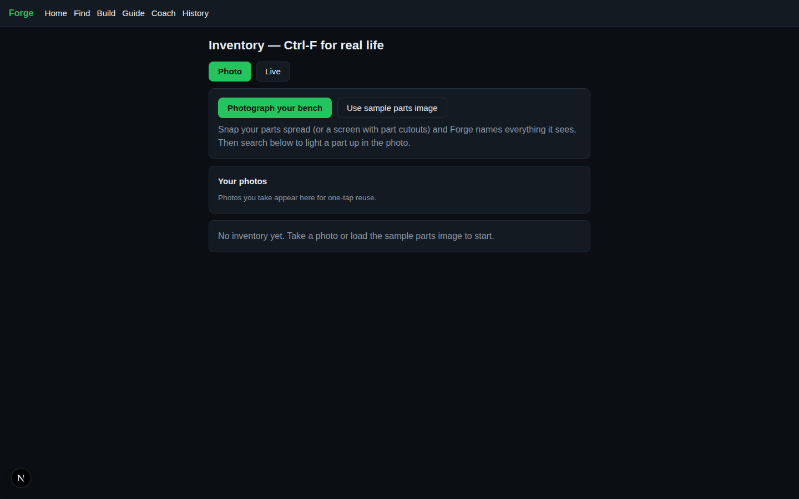
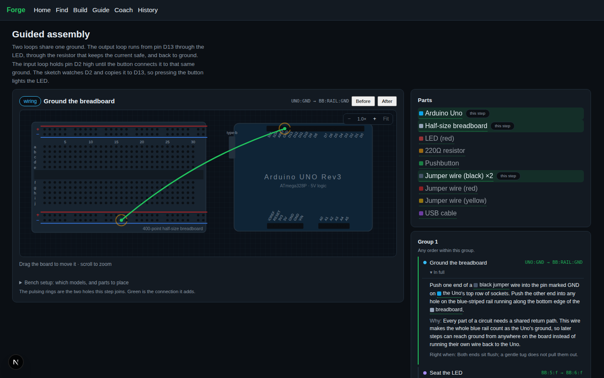
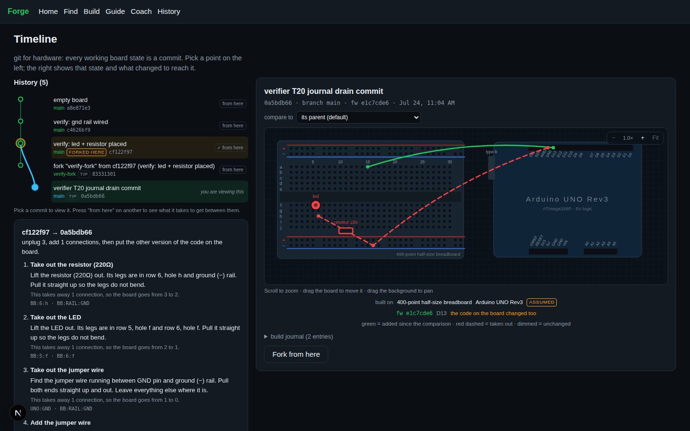

01 / 04
Recognize
Photograph the mess. Forge names every part and makes the bench searchable.
Open inventory ↗Camera-native hardware workspace · 2026
Forge turns the messy workbench into a guided, testable, remembered build. Point your camera. Place the part. Know why it works.

Software learned to meet people where they are. Forge brings that generosity to the physical world: it sees what is in front of you, gives one clear next action, and keeps the state you earned.
From the first photo to the next version, every action is part of a build you can understand and return to.
Photograph the mess. Forge names every part and makes the bench searchable.
Open inventory ↗
Firmware is generated from the pins you actually used. Compile it. Flash it. See the result.
Open bench ↗
 02:18:44 / LIVE
02:18:44 / LIVENot a diagram.
Forge is built for the last wire, the wrong hole, and the “why is this not working?” It does not leave you alone with a PDF. It watches, explains, and remembers.
Realtime understanding turns “which socket?” into a calm next step. Practice on the bundled footage, or point Forge at the real bench.
Read the engineering notes ↗Forge / Open prototype